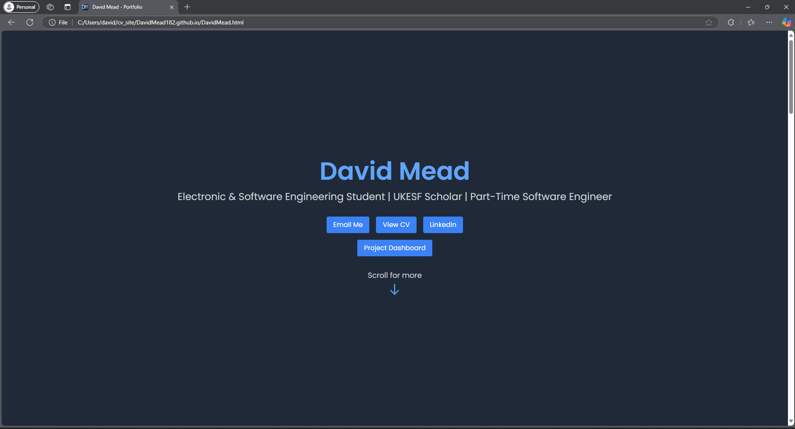
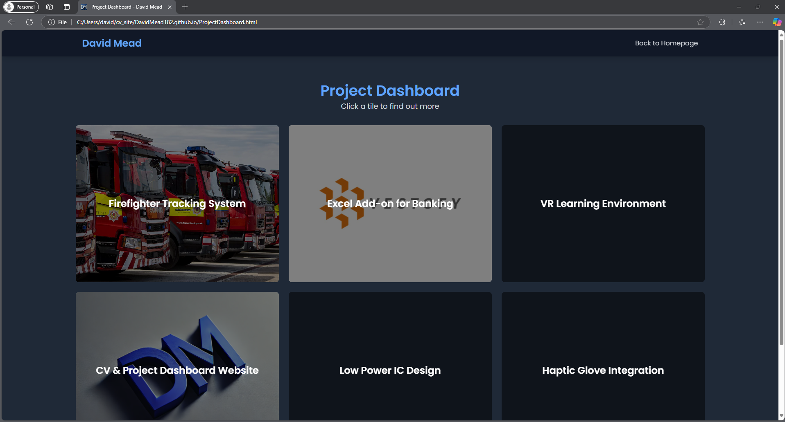

A website showcasing my CV/Resume information and all my projects. Built using HTML, CSS, and JavaScript, and deployed on GitHub Pages.
This is the website you are currently viewing!
Provide a detailed overview of the project. Explain the problem it solves, the technologies used, and the impact it has made. You can also include challenges faced and how they were overcome.
Website Homepage
Website Project Dashboard
